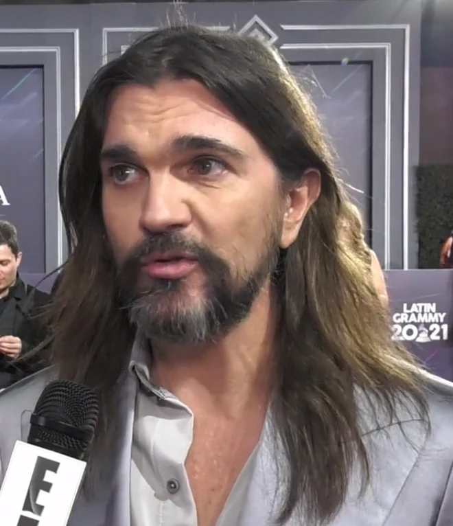
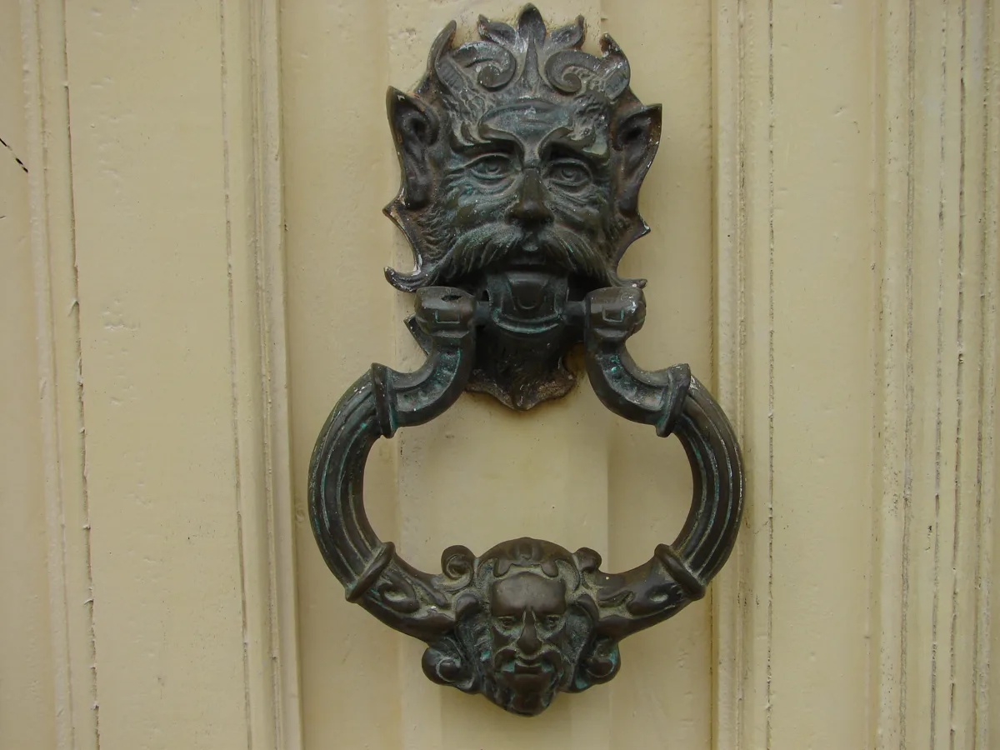
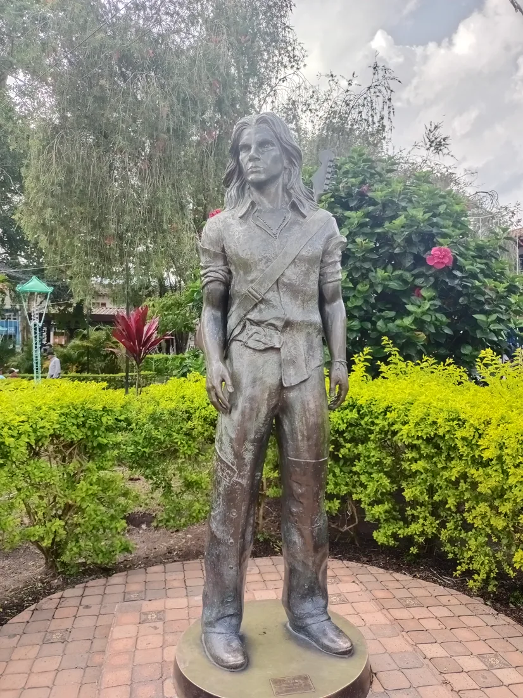

¿Quién es Juanes?
Juanes
Juan Esteban Aristizábal Vásquez
Cantante, compositor y guitarrista. Nació en Medellín en 1972 y su familia tiene raíces en Carolina del Príncipe, Antioquia. De la banda de metal de su adolescencia pasó a ser uno de los artistas más premiados de la música en español.
Página no oficial. La hace el equipo de Helikón, inspirada en la historia de Juanes. No tiene relación con él ni con su equipo.

Vida
Toca un punto de la ruta. El camino va de Medellín, donde nació, a Carolina del Príncipe, el pueblo de su familia.
Medellín → Barbosa → Porce → Gómez Plata → Carolina del Príncipe. Unos 100 km, cerca de dos horas en carro. Esquema, no a escala.
Nace el 9 de agosto de 1972
Nace en la Clínica El Rosario, en Medellín. Sus padres son Javier Aristizábal y Alicia Vásquez, y tiene cinco hermanos mayores.
Fuente: Wikipedia en español.
Carolina del Príncipe
Pueblo del norte de Antioquia, parroquia desde 1787 y a unos 1.800 m de altura. Allí tiene raíces su familia. Las fuentes no coinciden en cuánto vivió en él: una dice que su infancia fue «entre Medellín y Carolina», otra que vivía en Medellín y lo visitaba.
Fuentes: Wikipedia, Blu Radio, El Colombiano.


Ver más sobre su familia y sus primeros años
Aprendió guitarra en casa, con su padre y sus hermanos mayores. Las fuentes no coinciden en las edades, así que aquí no las damos.
Su madre, Alicia Vásquez, murió en septiembre de 2025, a los 95 años, y Juanes se despidió de ella con un mensaje público. Fuentes: El Colombiano, Metro Puerto Rico.
Música
Toca la guitarra: con un clic, con un toque o con las teclas 1 a 6. Cada cuerda guarda un disco que ganó premios.
Toca una cuerda.
Van de la más grave (6, la del disco más antiguo) a la más aguda (1, el disco más reciente). Cada una suena con la nota de su afinación estándar.
La carrera en discos
Desliza las viñetas, arrastra la púa por la cuerda o dale a reproducir. El disco gira y cambia de etiqueta con cada hito.
Nace Ekhymosis
- Álbumes
- 0
- Hito
- 1/14
-
1988
Banda
Nace Ekhymosis
Funda la banda de thrash metal con la que se forma en el rock colombiano. Las fuentes dan 1987 o 1988.
-
1997–98
Cambio
Rumbo solista
Ekhymosis se disuelve a finales de los noventa y decide seguir su camino solo.
-
2000
Álbum
Fíjate Bien
Su debut como solista, con la producción de Gustavo Santaolalla.
-
2002
Álbum
Un Día Normal
El disco de «A Dios le pido» y de «Fotografía», a dúo con Nelly Furtado.
-
2004
Álbum
Mi Sangre
El álbum de «La camisa negra».
-
2007
Álbum
La Vida… Es un Ratico
Su cuarto álbum de estudio, el de «Me enamora».
-
2010
Álbum
P.A.R.C.E.
Su quinto álbum de estudio.
-
2012
En vivo
MTV Unplugged
Su concierto acústico gana el Latin Grammy a Álbum del Año.
-
2014
Álbum
Loco de Amor
Su sexto álbum de estudio.
-
2017
Álbum
Mis planes son amarte
Su séptimo álbum de estudio.
-
2019
Álbum
Más futuro que pasado
Su octavo álbum de estudio.
-
2021
Álbum
Origen
Su noveno álbum de estudio.
-
2023
Álbum
Vida Cotidiana
Su décimo álbum de estudio.
-
2026
Álbum
Juanesteban
Celebra más de 25 años como solista con un álbum de 16 canciones.
Escúchalo
Es el reproductor oficial del perfil de Juanes en Spotify. Solo se carga si lo pides, porque Spotify recibe tu visita al cargarlo.
Ver más sobre sus discos
Además de los diez álbumes de estudio, tiene tres discos en vivo: La Vida… (En Vivo) (2008), MTV Unplugged (2012) y Tigo Music Sessions (2014). Su álbum más reciente, Juanesteban, salió el viernes 6 de marzo de 2026. Fuentes: Wikipedia, discografía, La República.
Activismo
Una fundación y dos conciertos por la paz. Da la vuelta a cada carta para ver qué pasó y de dónde sale el dato.
-
2006
Fundación Mi Sangre
La crea con Catalina Cock Duque, primero para víctimas de minas antipersona; hoy trabaja liderazgo y paz. Según la propia fundación, ha llegado a 2.111.626 personas en 281 municipios.
-
16 mar 2008
Paz sin Fronteras
En plena crisis diplomática entre Colombia, Ecuador y Venezuela, reúne a más de 600.000 personas en el puente Simón Bolívar, en la frontera de Cúcuta.
-
20 sep 2009
Paz sin Fronteras II
Canta en la Plaza de la Revolución, en La Habana, ante más de un millón de personas. La cifra varía según la fuente: hasta 1.150.000.
Premios
- +25 Latin Grammy
- 4 Grammy
- +15M Discos vendidos en el mundo
- 12 Álbumes publicados
El muro, año a año
Todo lo que ha ganado, junto: cada estatuilla es un premio y cada estrella, un homenaje. Filtra por ceremonia, busca una canción o un álbum, y toca una casilla, un año o una fila para ver el detalle.
El muro reúne los premios y homenajes que se pueden fechar uno por uno. Según Wikipedia suma 160 premios ganados y 395 nominaciones en total, así que la lista puede estar incompleta. El total de Latin Grammy varía entre 26 y 27 según la fuente.
Fuentes: Recording Academy, Wikipedia, BMI, uDiscover Music (Salón de la Fama) y El Tiempo (Leyenda de Nuestra Tierra).
De la vida real al mito
I Su historia inspira Cuerdasdel Destino El cómic de Helikón toma la esencia de este viaje, no como biografía literal, sino como punto de partida de una historia de ficción. Explorar el cómic →